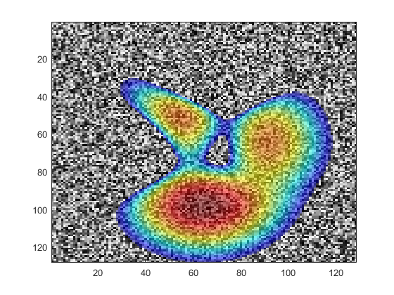

overlayPlot
Overlay two images.
Syntax
overlayPlot(bg, fg) overlayPlot(bg, fg, ...) overlayPlot(x, y, bg, fg) overlayPlot(x, y, bg, fg, ...)
Description
overlayPlot overlays two 2D images. The background image is displayed using a grayscale map. For a non-zero dynamic range, the foreground image is log compressed (discarding negative values), thresholded to a particular dynamic range, and overlaid using an alpha value of 0.5. If the dynamic range is set to zero, the foreground image is overlaid without additional processing.
Example:
bg = rand(128); fg = peaks(128); overlayPlot(bg, fg);
Inputs
x, y |
vectors describing the position of the pixels in the image equivalent to image(x, y, c) |
bg |
background image |
fg |
foreground image |
Optional Inputs
Optional 'string', value pairs that may be used to modify the default computational settings.
| Input | Valid Settings | Default | Description |
|---|---|---|---|
'ColorBar' |
(Boolean scalar) | false |
Boolean controlling whether a colorbar is displayed. |
'ColorBarTitle' |
(string) | 'dB' with log compression'' otherwise |
String defining the title used for the colorbar. |
'ColorMap' |
(string) | 'jet' |
String defining the colormap used for the overlay. |
'LogComp' |
(Boolean scalar) | true |
Boolean controlling whether the forergound image is log compressed before display. |
'LogCompRef' |
(numeric scalar) | max(fg(:)) |
Reference value used in the log compression, where fg_compressed = 20 * log10(fg ./ fg_ref). |
'NumColors' |
(integer scalar) | 256 | Number of colors used in the colormaps. |
'PlotScale' |
(numeric two element vector) | [-30, 0] with log compression[min(fg(:)), max(fg(:))] otherwise |
Plot scale used to display the foreground image. |
'Transparency' |
(numeric scalar) | 0.5 |
Transparency used for the foreground image, between 0 and 1. |
See Also
beamPlot, voxelPlot